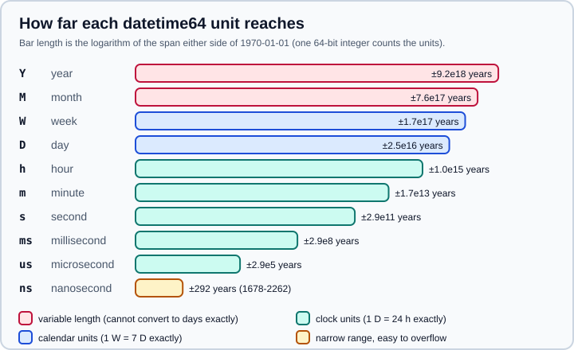

Dates and Times with datetime64
|
This content was generated with the assistance of AI and should be verified against the official documentation before being relied on in production. |
This page targets NumPy 2.5 (every example was run on NumPy 2.5.4), checked against the official documentation in October 2026. Examples target Python 3.13 or 3.14 and were run on Python 3.13. It covers the two NumPy types for calendar and clock values: datetime64, a point in time, and timedelta64, a duration. Both store one signed 64-bit integer plus a unit, so arrays of them are compact, sortable and fast to compare. They also sit underneath the pandas time types, which are covered in Time Series and Dates and Time Deltas. For the general dtype machinery, see Data Types.
The model: an integer and a unit
A datetime64 value is a count of units since the epoch, 1970-01-01T00:00. The unit is part of the dtype and is written in brackets: datetime64[D] counts days and datetime64[ms] counts milliseconds. Dates follow the proleptic Gregorian calendar, extended indefinitely in both directions, and years before the common era use astronomical numbering (1 BC is year 0). NumPy treats every day as exactly 86400 seconds, which holds for TAI but not for UTC, so leap seconds do not exist and a string such as 2016-12-31T23:59:60 cannot be parsed.
The unit is inferred from the string you give, or fixed by passing it explicitly. Dates in YYYY-MM-DD form get D, YYYY-MM gets M, and a time with fractional seconds gets the finest unit that fits.
import numpy as np
day = np.datetime64("2026-10-31")
month = np.datetime64("2026-10")
stamp = np.datetime64("2026-10-31T12:30:15.250")
print(repr(day), day.dtype)
print(repr(month), month.dtype)
print(repr(stamp), stamp.dtype)
# Explicit unit, and arrays
dates = np.array(["2026-01-01", "2026-03-15", "NaT"], dtype="datetime64[D]")
print(dates, dates.dtype)
print(np.isnat(dates))
# The integer behind the value counts units since 1970-01-01
print(day.astype("int64"), np.datetime64(0, "D"))Output:
np.datetime64('2026-10-31') datetime64[D]
np.datetime64('2026-10') datetime64[M]
np.datetime64('2026-10-31T12:30:15.250') datetime64[ms]
['2026-01-01' '2026-03-15' 'NaT'] datetime64[D]
[False False True]
20757 1970-01-01
Source: NumPy: Datetimes and timedeltas
A unit can carry a multiplier, for example datetime64[5m] for five-minute buckets, and np.datetime_data(dtype) returns the pair back:
import numpy as np
print(np.datetime_data(np.dtype("datetime64[5m]")))Output:
('m', 5)
Units and the range they cover
Because one 64-bit integer counts the units, a finer unit reaches a shorter span around the epoch. Years, months, weeks and days are the date units; hours down to attoseconds are the time units.

The figure is drawn from the spans listed in the official documentation. The practical consequences are these:
-
Microseconds cover roughly the years 290301 BC to 294241 AD, which is more than enough for any dataset.
-
Nanoseconds cover only about 1678 to 2262. NumPy does not always tell you when a value falls outside that range (see Overflow and the nanosecond range).
-
Picoseconds, femtoseconds and attoseconds cover less than a day or two around the epoch and are only useful for relative values.
-
Weeks are aligned to the epoch, which was a Thursday, so
np.datetime64("2026-10-31", "W")is2026-10-29, the Thursday that starts that week. Do not useWto mean ISO weeks.
Ranges, differences and unit promotion
np.arange accepts datetime strings and a timedelta64 step. The dtype argument decides the unit and the end point is excluded, as for numbers.
Subtracting two datetimes gives a timedelta64; adding a timedelta to a datetime gives a datetime. Dividing one timedelta by another gives a plain float, which is the safe way to express "how many hours" as a number. When the two operands have different units, NumPy promotes both to the finer one.
import numpy as np
print(np.arange("2026-01", "2026-06", dtype="datetime64[M]"))
print(np.arange("2026-01-01", "2026-01-02", np.timedelta64(6, "h"), dtype="datetime64[h]"))
delta = np.datetime64("2026-03-01") - np.datetime64("2026-01-01")
print(repr(delta))
print(delta / np.timedelta64(1, "D")) # float division gives a plain ratio
print(delta.astype("timedelta64[W]")) # integer conversion truncates
print(delta // np.timedelta64(1, "W"), delta % np.timedelta64(1, "W"))
hours = np.array([1, 2, 3], dtype="timedelta64[h]")
print(hours.sum(), hours.mean(), hours * 2)
print(hours / np.timedelta64(30, "m"))
# Units are promoted to the finer one
print(np.datetime64("2026-01-01", "D") + np.timedelta64(30, "s"))
print(np.datetime64("2026-01-01T00:00", "m") == np.datetime64("2026-01-01", "D"))Output:
['2026-01' '2026-02' '2026-03' '2026-04' '2026-05'] ['2026-01-01T00' '2026-01-01T06' '2026-01-01T12' '2026-01-01T18'] np.timedelta64(59,'D') 59.0 8 weeks 8 3 days 6 hours 2 hours [2 4 6] [2. 4. 6.] 2026-01-01T00:00:30 True
Source: NumPy: Datetimes and timedeltas
Two points are easy to miss. astype("timedelta64[W]") truncates (59 days is 8 weeks and 3 days), and a mean of timedeltas keeps the integer representation, so hours.mean() is 2 hours. Convert to a float with a division first when you need a fractional result.
Months and years are not days
Days, weeks and every time unit have a fixed length in relation to each other: one week is exactly seven days and one day is exactly 24 hours. Months and years do not. A month can be 28 to 31 days, so NumPy refuses to combine a month-based timedelta with a day-based value in a safe cast:
import numpy as np
# Months and years have no fixed length in days
print(np.datetime64("2026-01-31", "M") + np.timedelta64(1, "M"))
try:
np.datetime64("2026-01-31") + np.timedelta64(1, "M")
except Exception as exc:
print(type(exc).__name__, "-", exc)
try:
np.timedelta64(1, "M") / np.timedelta64(1, "D")
except Exception as exc:
print(type(exc).__name__, "-", exc)
# Forcing the conversion is possible and uses the 400-year average
print(np.timedelta64(1, "Y").astype("timedelta64[D]"), np.timedelta64(1, "M").astype("timedelta64[D]"))
# Truncating a day to a month drops the day for good
print(np.datetime64("2026-01-31", "M"), np.datetime64("2026-01-31").astype("datetime64[M]"))Output:
2026-02
UFuncTypeError - Cannot cast ufunc 'add' input 1 from dtype('<m8[M]') to dtype('<m8[D]') with casting rule 'same_kind'
TypeError - Cannot get a common metadata divisor for Numpy datetime metadata [M] and [D] because they have incompatible nonlinear base time units.
365 days 30 days
2026-01 2026-01
Source: NumPy: Datetimes and timedeltas
The forced astype uses the average of the 400-year Gregorian cycle and truncates, which gives 365 days for a year and 30 days for a month. Treat that as an approximation, never as calendar arithmetic. For "the same day next month" use month-unit datetimes and add a month-unit timedelta, then convert back to days only if you accept the day-of-month loss, or use pandas offsets (pd.DateOffset) when you need true calendar rules.
NaT: the missing value
NaT (not a time) plays the role of NaN for dates. It exists for both types, propagates through arithmetic, never compares equal to anything (including itself), and sorts to the end. np.isnat is the test.
import numpy as np
a = np.array(["2026-03-01", "NaT", "2026-01-01"], dtype="datetime64[D]")
print(np.sort(a)) # NaT sorts to the end
print(a.min(), a.max()) # NaT propagates
print(np.nanmin(a), np.nanmax(a)) # skip NaT
print(a == a) # NaT is never equal to itself
print(np.unique(a))
clean = np.sort(a[~np.isnat(a)])
print(np.searchsorted(clean, np.datetime64("2026-02-01")))
print(np.datetime64("NaT", "D") - np.datetime64("2026-01-01"))Output:
['2026-01-01' '2026-03-01' 'NaT'] NaT NaT 2026-01-01 2026-03-01 [ True False True] ['2026-01-01' '2026-03-01' 'NaT'] 1 NaT
Source: NumPy: Datetimes and timedeltas
Since NumPy 2.5 a NaT needs an explicit unit. A bare np.datetime64("NaT") has the generic unit and is deprecated, so write np.datetime64("NaT", "D"). Mixing a bare NaT into a comparison already emits a DeprecationWarning on 2.5.4.
Converting to and from Python objects
.item() converts a scalar to a standard-library object, and the result type depends on the unit. This matters because pandas and most other libraries accept datetime.datetime, but nanosecond values cannot be represented by it.
| Unit | .item() returns |
|---|---|
|
|
|
|
|
|
|
|
|
|
import datetime as dt
import warnings
import numpy as np
x = np.datetime64("2026-10-31T12:34:56")
print(repr(x.item()), type(x.item()).__name__)
print(repr(np.datetime64("2026-10-31").item()))
print(repr(np.datetime64("2026-10-31T00:00:00.123456789").item())) # nanoseconds -> int
print(repr(np.datetime64("NaT", "D").item()))
print(np.datetime64(dt.datetime(2026, 10, 31, 1, 2, 3)))
# Timezones: only naive values are stored
with warnings.catch_warnings(record=True) as caught:
warnings.simplefilter("always")
print(np.datetime64("2026-10-31T12:00+02:00"))
print(caught[0].category.__name__, "-", caught[0].message)
print(np.datetime_as_string(np.datetime64("2026-10-31T12:00", "s"), timezone="UTC"))
print(np.datetime_as_string(np.array(["2026-10-31T12:00"], dtype="datetime64[m]"), unit="D"))Output:
datetime.datetime(2026, 10, 31, 12, 34, 56) datetime datetime.date(2026, 10, 31) 1793404800123456789 None 2026-10-31T01:02:03.000000 2026-10-31T10:00 UserWarning - no explicit representation of timezones available for np.datetime64 2026-10-31T12:00:00Z ['2026-10-31']
Timezones
datetime64 is always naive: it stores no timezone. A string with an offset is still accepted for backward compatibility, but NumPy converts it to UTC, drops the offset and emits a UserWarning (the parsing of offsets was deprecated in NumPy 1.11 and the documentation says it will raise an error in the future). The example above shows 12:00+02:00 becoming 10:00. Passing a timezone-aware datetime.datetime triggers the same warning.
The rule that avoids the problem is to normalise to UTC before you build the array, keep the whole array in UTC, and convert for display at the edge of the program. np.datetime_as_string(..., timezone="UTC") only appends a Z to the text; it does not shift the value. When you need real zone handling (daylight saving, local midnight) use zoneinfo for single values or pandas for columns, as in Time Series and Dates.
Moving between NumPy and pandas
pandas 3.1 stores datetimes in datetime64 arrays and converts the unit on the way in. For example a datetime64[D] array becomes a datetime64[s] Series, and pd.to_datetime on a day array gives datetime64[s] too, while strings parse to datetime64[us]. The default resolution changed to microseconds in pandas 3.0, so code that does astype("int64") on a timestamp column and expects nanoseconds now gets 1000 times smaller numbers. Always state the unit when you cast to integers: series.to_numpy().astype("datetime64[ns]") or .astype("int64") after an explicit unit conversion.
Business days
NumPy ships a small business-calendar toolkit for D-unit values: np.is_busday, np.busday_offset and np.busday_count. The default week is Monday to Friday. A custom week is a weekmask, written as a string of seven 0 and 1 flags starting on Monday ("1111100"), as a list, or as day abbreviations ("Mon Tue Wed Thu Fri", case sensitive). holidays is any list of dates that never count as business days.
The roll argument of busday_offset decides what happens when the input is not a business day. The default is "raise"; the alternatives are "nat" (return NaT), "forward", "backward", "modifiedfollowing" and "modifiedpreceding" (the modified variants roll the other way when the first direction would cross into another month). busday_count(begin, end) counts the days in the half-open range, so the end date is excluded, and it returns a negative number when begin is after end.
import numpy as np
print(np.is_busday("2026-10-31")) # a Saturday
print(np.busday_offset("2026-10-30", 1)) # Friday + 1 business day
print(np.busday_offset("2026-10-31", 0, roll="forward")) # roll the Saturday to Monday
try:
np.busday_offset("2026-10-31", 1) # roll defaults to 'raise'
except ValueError as exc:
print("ValueError -", exc)
print(np.busday_count("2026-10-01", "2026-11-01")) # end date is exclusive
print(np.busday_count("2026-12-21", "2026-12-31", holidays=["2026-12-25"]))
print(np.busday_offset("2026-10-30", 1, weekmask="Sun Mon Tue Wed Thu Fri"))
cal = np.busdaycalendar(weekmask="1111100", holidays=["2026-12-25", "2026-01-01"])
print(cal.weekmask, cal.holidays)
print(np.busday_offset("2026-12-24", 1, busdaycal=cal))Output:
False 2026-11-02 2026-11-02 ValueError - Non-business day date in busday_offset 22 7 2026-11-01 [ True True True True True False False] ['2026-01-01' '2026-12-25'] 2026-12-28
Source: NumPy: busday_offset
Build a np.busdaycalendar once when you reuse the same weekmask and holidays for many calls, because it validates and stores the weekmask and the sorted holidays once, instead of preparing them again on every call. Public holidays are not built in: you must supply them, and they differ by country and year.
Pitfalls
Overflow and the nanosecond range
The nanosecond unit reaches only about 292 years either side of 1970. Converting an existing array raises an error, but parsing a string does not always do so.
import warnings
import numpy as np
# Range of each unit: the nanosecond span is only about +/- 292 years
print(np.datetime64("1970-01-01", "ns") + np.timedelta64(2**63 - 1, "ns"))
print(np.datetime64("2300-01-01", "ns")) # parses without error, silently wraps
try:
np.array(["2300-01-01"], dtype="datetime64[D]").astype("datetime64[ns]")
except OverflowError as exc:
print("OverflowError -", exc)
# Generic units are deprecated in 2.5
with warnings.catch_warnings(record=True) as caught:
warnings.simplefilter("always")
np.datetime64("2026-01-01") + 1
np.datetime64("NaT") == np.datetime64("2026-01-01")
for w in caught:
print(w.category.__name__, "-", str(w.message)[:70])
print(np.datetime64("2026-01-01") + np.timedelta64(1, "D"))Output:
2262-04-11T23:47:16.854775807 1715-06-13T00:25:26.290448384 OverflowError - Overflow when converting between datetime64 units DeprecationWarning - The 'generic' unit for NumPy timedelta is deprecated, and will raise a DeprecationWarning - The 'generic' unit for NumPy timedelta is deprecated, and will raise a 2026-01-02
Source: NumPy 2.5.0 release notes
On 2.5.4, np.datetime64("2300-01-01", "ns") returned 1715-06-13 without any warning, so a string parse into nanoseconds can wrap silently. Choose us or D when your data can contain dates outside 1678 to 2262 (sentinel dates such as 2999-12-31 are a common trigger), and validate the range of external data before casting. The 2.5 release notes add one guard: addition, subtraction and integer multiplication of datetime64 and timedelta64 now raise OverflowError when the result would overflow int64 or land on the NaT sentinel value, where earlier versions silently wrapped.
Generic units are deprecated in 2.5
A timedelta64 without a unit has the generic unit. Bare integers added to a date, np.timedelta64(5) and a unit-less NaT all rely on it. NumPy 2.5 deprecates this, because the generic unit leads to non-transitive comparisons, and the call will raise in a future version. Migrate by always writing a unit:
-
dates + 1becomesdates + np.timedelta64(1, "D"); -
td == 0becomestd == np.timedelta64(0, "s"); -
np.datetime64("NaT")becomesnp.datetime64("NaT", "D"); -
in
np.testing.assert_allclose, giveatolan explicit unit, such asnp.timedelta64(0, "s").
Older books and tutorials write d + 1 for "the next day" and np.datetime64("NaT") freely. Both still run in 2.5 but warn, so treat them as outdated (written before NumPy 2.5) and fix them when you touch the code.
Other traps
-
Values of different units compare after promotion to the finer unit, so
2026-01-01T00:00in minutes equals2026-01-01in days, because the day starts at midnight. A coarse value always means the start of its period, never the whole period. -
datetime64sorts and indexes fine, butsumandmeanof adatetime64array raiseUFuncTypeErrorbecause adding two points in time is meaningless. Take the mean of the differences from a reference date as atimedelta64, then add it back:a[0] + (a - a[0]).mean(). -
Truncating to a coarser unit with
astype("datetime64[M]")discards the day; there is no way back. -
Leap seconds are ignored, so differences between UTC timestamps that span a leap second can be off by that second. The documentation lists this as a known shortcoming.
-
For month-of-year or weekday, pandas (
.dt.month,.dt.dayofweek) is far less error-prone than integer arithmetic on the epoch count.